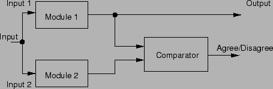

Next: ระบบสำรองพร้อมทำงาน
Up: ระบบที่คงทนต่อความเสียหาย
Previous: ระบบ N Modular Redundancy
Contents
Index
ตัวอย่างของระบบที่สามารถตรวจสอบความเสียหายได้แก่ ระบบที่มีการเปรียบเทียบการทำงานสองระบบที่ทำงานพร้อมกัน ดังแสดงในรูป 9.13
แนวคิดเบื้องต้นของระบบดังกล่าวคือ มีระบบที่เหมือนกันทุกประการทำงานพร้อมกัน เพื่อเทียบผลของการคำนวณ ถ้าผลการคำนวณไม่ตรงกัน ระบบจะส่งสัญญาณไม่สอดคล้องออกมา (Disagreement) การทำงานในลักษณะนี้มีความต้องการในการตรวจจับความเสียหาย ไม่ได้มีจุดประสงค์เพื่อคงทนต่อความเสียหาย อย่างไรก็ตามวิธีการเปรียบเทียบการทำงานสองระบบ เป็นพื้นฐานของการตรวจจับความเสียหาย ซึ่งใช้มากในระบบที่สามารถคงทนต่อความเสียหายได้
การเปรียบเทียบค่าเอาท์พุดของระบบ บางครั้งอาจเปรียบเทียบเป็นค่าช่วงการทำงาน เนื่องจากการคำนวณของระบบคอมพิวเตอร์ เป็นการยากที่จะให้ได้ค่าเท่ากันพอดี เนื่องจากความเบี่ยงเบน อาจเกิดจากค่าคลาดเคลื่อนของตัวตรวจวัดต่างๆ หรืออุปกรณ์แปลงค่าจากอนาล็อกเป็นดิจิตอล
Figure 9.13:
ระบบที่มีการเปรียบเทียบการทำงานสองระบบที่ทำงานพร้อมกัน
|

|
Vara Varavithya
2002-03-09